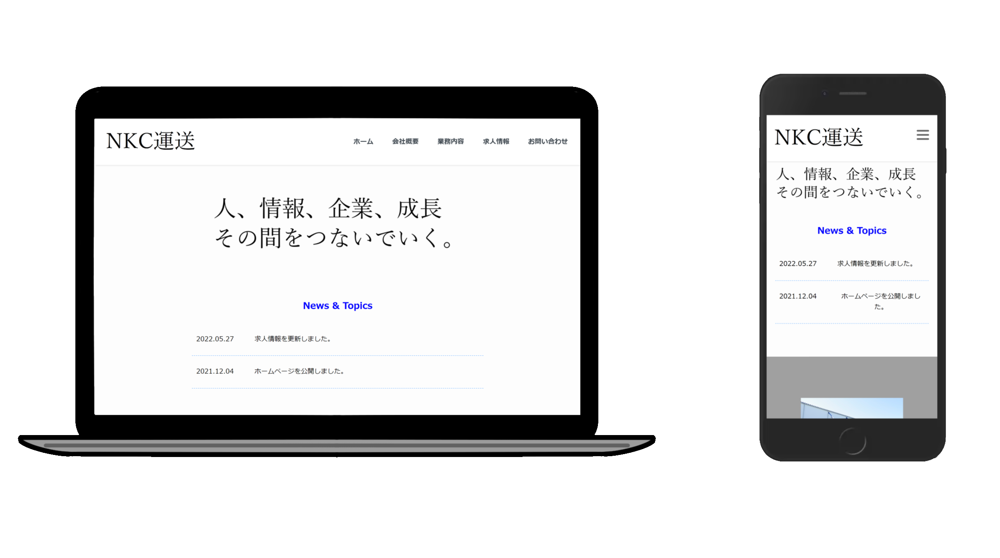

PROJECT

サイト名
NKC運送会社
ターゲット層
運送会社の就職を目指している方
コンセプト
運送会社の過酷なイメージとは違う明るく清潔感のあるデザインにすることで、運送業界への就職を目指す方々が安心して応募できる雰囲気にしました。
制作の目的
グループ制作を体験する
制作人数
6人
制作期間
1ヶ月
使用ツール
ペイント・ペイント3D
担当範囲
Design / HTML・CSS /JavaScript
制作ポイント・工夫
サイトのメインカラーを白と青にすることでシンプルなデザインながらも明るく清潔感を表現しました。 白は明るさと清潔感と表現し、青色は仕事に対しての専門性や信頼性を表現しています。 レスポンシブデザインを使用し、パソコンだけでなく、スマートフォンやタブレットからでもサイトを快適に閲覧出来るように工夫しました。 また情報が多くなる求人情報画面では、ユーザーが迅速に目的の求人情報を見つけられるようアコーディオンパネルを導入しました。
コメント
初めてグループで制作した作品です。グループ開発を進める際のコミュニケーション能力や知識を身に着けようと考えグループリーダーを務めました。このプロジェクトを通じて、ワイヤーフレーム・モックアップや要件定義など、制作で必要なことを知ることができました。自分の技術力不足を痛感することになりましたが、それを成長の機会ととらえ、技術力のあるクラスメイトに色々な技術や知識を教えて貰うきっかけになりました。